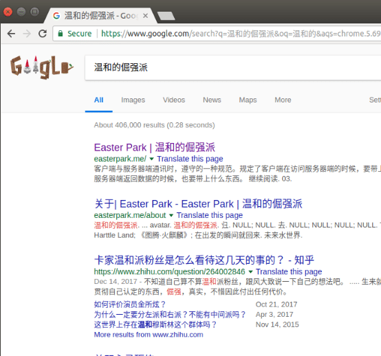
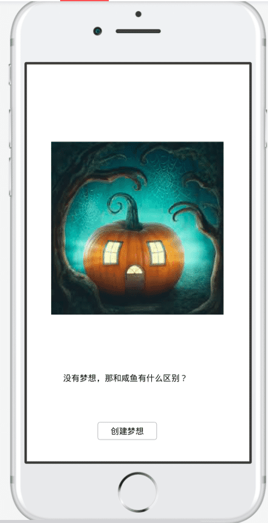
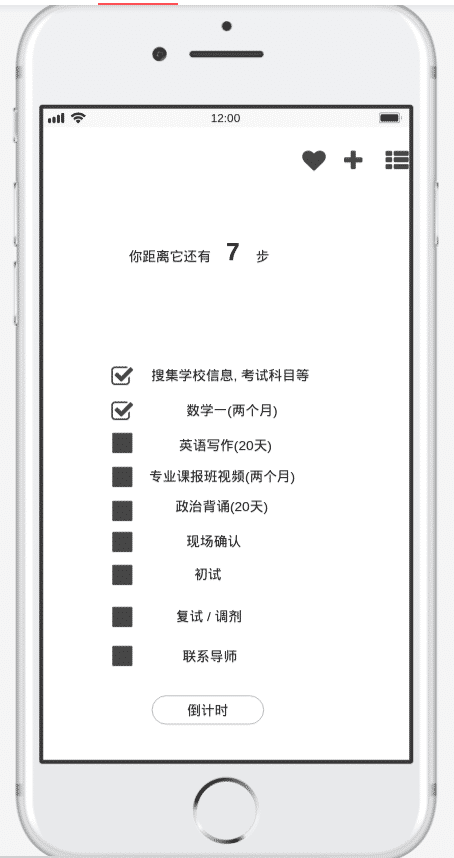
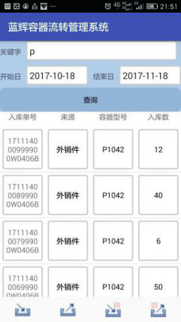

王二狗
求职意向: JavaWeb 后端开发
- 项目经验
-
有招SaaS平台开发 -- 实习项目 产品官网
S: 基于 Spring Boot 技术栈，多租户架构的新一代招聘管理系统
T: 我负责组织架构下的岗位职级子模块业务，根据需求文档编写业务代码
A: 我通读产品需求文档，产品逻辑上不清晰的地方，马上和产品经理远程沟通确认，得到确定结果后，更新文档；
然后开始建模，先根据自己对业务的理解画一个简易的ER图，完成后给后端的前辈们指正，根据前辈们的建议修改几版，逻辑非常复杂的模块，前辈们会先建模，我会花很长时间去理清实体间的联系，并和前辈们沟通， 以求得对业务的深刻理解。
接着进入 coding，我会先将每个功能分解，明确每个分解步骤的输入输出，对照前面相似的模块开始写 api；完成后，用 postman 对接口功能进行测试，测试通过后，准备提交；
我先rebase 同步最新的代码，大致看一下哪些改动，用 SonarLint检查代码中的语法问题，最大程度追求 0 warnings，最后 push 到 codebase。
R: 我经历了项目从零到第一次 release 过程，真正融入到软件开发团队协作的过程中，我的工作获得了前辈们的认可
-
基于 Springboot 的校园商铺平台 -- 毕业设计 2019年4月上线
我的技术栈：
构建工具：Gradle
框架： Springboot
质量保证 ： pmd / checkstyle / SonarLint
数据库 Mysql： CRUD 备份迁移
版本控制：Github
持续集成：CircleCI
系统：我比较喜欢 Ubuntu 这样小而美的开源系统，现在正将工作环境转移到 macOS 上
编辑器：intellij idea / atom
服务器 / 域名：DigitalOcean / NameCheap
我的两份实习经历均是在新型互联网公司，使我了解软件开发最前沿的技术和思想（测试驱动 / 持续交付），让我在毕业初期感受互联网氛围，也让我更加明确自己的职业方向
我依然在持续打磨我的技术栈，现在贴出来不是为了吹嘘什么，而是想让面试官知道我正在做什么，我想要做什么
-
- 其它经历
-
1.商务数据分析 成果展示
商务智能课程设计，我担任组长，爬取了慕课网/智联招聘/拉勾网上约 3万条数据，并进行数据预处理，为队友提供数据进行分析和可视化，最后被评为优秀作业发表在公众号 "用数说"
后来因为想要换手机（在小米 MIX2 和荣耀10之间摇摆），我从京东上爬取了两款商品的 2000 条中差评，预处理后对评论数据做词频分析，从而进行用户情感分析，了解中差评背后用户的真实想法
我把全部过程记录在我的博客中 《我想换个手机》
小米 MIX2 1000 条评论词云 && 荣耀10 1000 条评论词云
-
2.搜索引擎优化SEO 优化步骤
基于谷歌的SEO排名优化 - 将一个只有个位数访问量的静态博客优化到谷歌关键字搜索首页
示例: 谷歌搜索 "温和的倔强派",前两条结果就是我 :P
 -
3.IOS 产品设计
2018 全国高校计算机大赛 - 移动应用创新赛复赛作品
Dreamer - 一个基于 PDCA 的梦想实现类软件
亮点: 结合管理学中 PDCA 的思维模型,帮助人们科学量化梦想,分解梦想 + 图片隐写术(将文字形式的梦想写进图片中)
我担任队长，使用墨刀完成 Dreamer 从 0 到 1 的产品设计和图片隐写术功能，因为我一直想做一个时间管理类的app，不仅仅是为了提高效率，而在于管理梦想
Dreamer 进了中国计算机大赛 - 移动应用创新赛全国复赛（700 进 200），我们团队受邀到北京参加复赛沙龙
  -
4.安卓开发经验 - 武汉蓝辉容器流转系统客户端APP（2017年）
负责查询模块功能,使用前端listview布局, 发送网络请求,后端 MVC解析请求参数, 从 sql server中根据查询条件执行对应 sql, 后端将返回数据处理成 json 格式后,返回给前端显示

-
- 个人规划
-
目标成为一名优秀的 应用工程师
工欲善其事，必先利其器，我认为一个优秀的应用工程师必然是一个娴熟的使用者，一个对新工具有熟悉的手感
我熟悉 mac 和 ubuntu 下的开发，idea 快捷键用的很 6 ，
DBMS：mysql + workbench，数据建模是我开始开发前要花最多时间做的事情
版本控制上，使用 rebase 方式进行 git 团队协作，提交 PR，解决冲突
我认为软件开发的过程应该是合作敏捷自动的，每一段代码都有质量保证，繁复而必要的测试应该被自动化代替
作为一名信管专业的学生，我对数据，信息，知识和智能有着特殊的专业敏感度，但在我职业的前三年，我希望从事系统开发岗位，在我对系统实现和业务场景有了更深刻的理解后，我会再回头专注系统的设计，它能解决的问题和应用场景上来
我想要成为信息系统的领域专家，我对此坚定不移